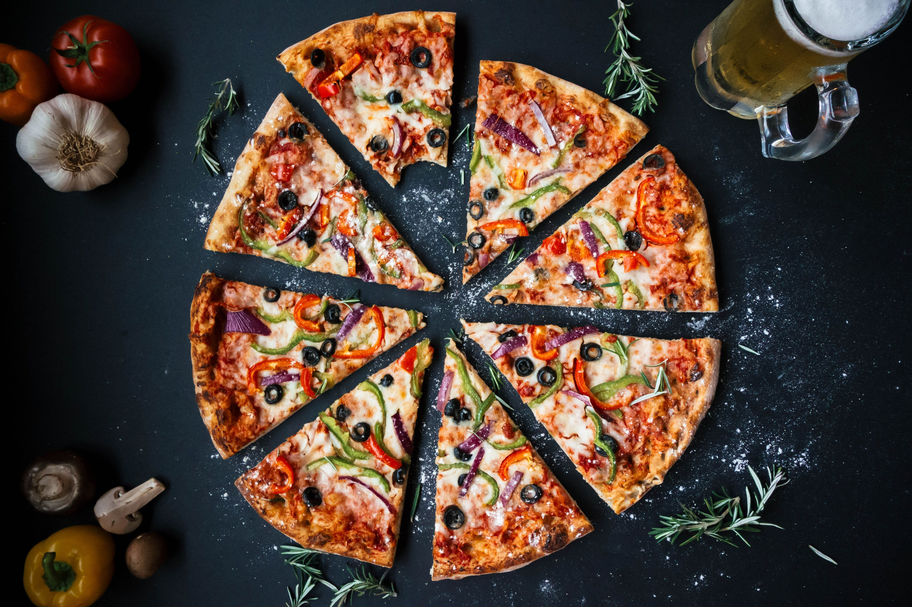
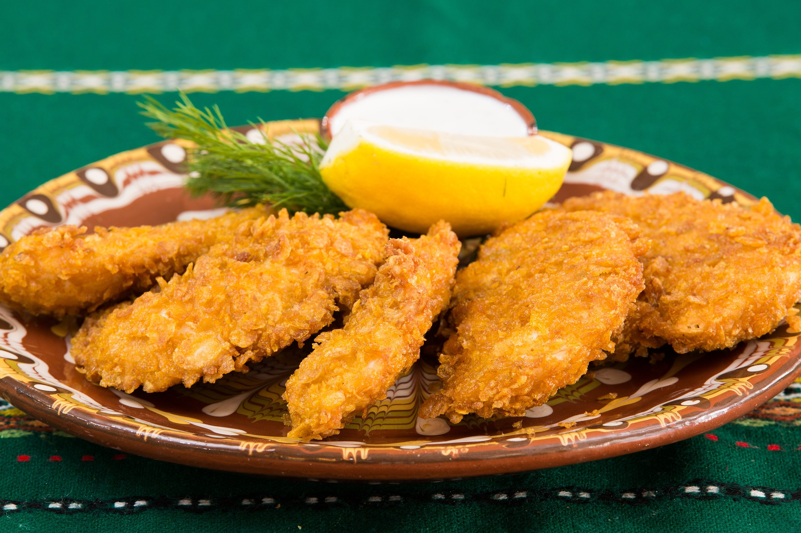

Salad
Your body can get the much-needed fibre with salads. Fibre's job is to reduce cholesterol and aid digestion. It also makes you feel full and prevents you from overeating.

Pizza comes in a very variety of tastes depending on ingredients, making the size and texture etc. On their own, they taste pretty good.
Each country has its unique seasoning and preferred cut of chicken, but the base flavour is still the same.
Your body can get the much-needed fibre with salads. Fibre's job is to reduce cholesterol and aid digestion. It also makes you feel full and prevents you from overeating.